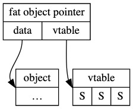

蚂蚁集团 ｜ Rust 数据内存布局
作者：worcsrcsgg
背景
我们团队同学 Jiacai Liu 在之前文章提到指向 trait obj 的指针为一个胖指针: >Rust 使用 fat pointer（即两个指针） 来表示 trait object 的引用，分别指向 data 与 vtable。 
另外团队中使用了一些调用 C 库 lib，比如 rust-rocksdb 库，里面封装 C 的数据结构会频繁出现 #[repr(C)]。
本文是在以上两个问题引申下展开的，学习探讨下 Rust 数据类型的内存布局。
主要分为两个部分，一是 Rust 中基本的数据类型内存布局，二是内存布局的表示。
常用类型
类型的布局是其大小（size）、对齐方式（align）及其字段的相对偏移量。对于枚举，如何布局和解释判别式也是类型布局的一部分。 对于 Sized 的数据类型，可以在编译时知道内存布局，可以通过 size_of 和 align_of 获得其 size 和 align。
The layout of a type is its size, alignment, and the relative offsets of its fields.
For enums, how the discriminant is laid out and interpreted is also part of type layout.
Type layout can be changed with each compilation.
数字类型
整数类型
| Type | Minimum | Maximum | size(bytes) | align(bytes) |
|---|---|---|---|---|
u8 | 0 | 28-1 | 1 | 1 |
u16 | 0 | 216-1 | 2 | 2 |
u32 | 0 | 232-1 | 4 | 4 |
u64 | 0 | 264-1 | 8 | 8 |
u128 | 0 | 2128-1 | 16 | 16 |
| Type | Minimum | Maximum | size(bytes) | align(bytes) |
|---|---|---|---|---|
i8 | -(27) | 27-1 | 1 | 1 |
i16 | -(215) | 215-1 | 2 | 2 |
i32 | -(231) | 231-1 | 4 | 4 |
i64 | -(263) | 263-1 | 8 | 8 |
i128 | -(2127) | 2127-1 | 16 | 16 |
浮点数
The IEEE 754-2008 "binary32" and "binary64" floating-point types are f32 and
f64, respectively.
| Type | size(bytes) | align(bytes) |
|---|---|---|
| f32 | 4 | 4 |
| f64 | 8 | 8 |
f64 在 x86 系统上对齐到 4 bytes。
usized & isized
usize 无符号整形，isize 有符号整形。 在 64 位系统上，长度为 8 bytes，在 32 位系统上长度为 4 bytes。
bool
bool 类型，取值为 true 或 false，长度和对齐长度都是 1 byte。
array
#![allow(unused)] fn main() { let array: [i32; 3] = [1, 2, 3]; }
数组的内存布局为系统类型元组的有序组合。
size 为 n*size_of::<T>()
align 为 align_of::<T>()
str
char 类型
char 表示：一个 32 位长度字符，Unicode 标量值 Unicode Scalar Value 范围为 in the 0x0000 - 0xD7FF 或者是 0xE000 - 0x10FFFF。
str 类型
str 与 [u8] 一样表示一个 u8 的 slice。Rust 中标准库中对 str 有个假设：符合 UTF-8 编码。内存布局与 [u8] 相同。
slice
slice 是 DST 类型，是类型 T 序列的一种视图。 slice 的使用必须要通过指针，&[T] 是一个胖指针，保存指向数据的地址和元素个数。 slice 的内存布局与其指向的 array 部分相同。
&str 和 String 的区别
下面给出 &str String 的内存结构比对：
#![allow(unused)] fn main() { let mut my_name = "Pascal".to_string(); my_name.push_str( " Precht"); let last_name = &my_name[7..]; }
String
buffer
/ capacity
/ / length
/ / /
+–––+–––+–––+
stack frame │ • │ 8 │ 6 │ <- my_name: String
+–│–+–––+–––+
│
[–│–––––––– capacity –––––––––––]
│
+–V–+–––+–––+–––+–––+–––+–––+–––+
heap │ P │ a │ s │ c │ a │ l │ │ │
+–––+–––+–––+–––+–––+–––+–––+–––+
[––––––– length ––––––––]
String vs &str
my_name: String last_name: &str
[––––––––––––] [–––––––]
+–––+––––+––––+–––+–––+–––+
stack frame │ • │ 16 │ 13 │ │ • │ 6 │
+–│–+––––+––––+–––+–│–+–––+
│ │
│ +–––––––––+
│ │
│ │
│ [–│––––––– str –––––––––]
+–V–+–––+–––+–––+–––+–––+–––+–V–+–––+–––+–––+–––+–––+–––+–––+–––+
heap │ P │ a │ s │ c │ a │ l │ │ P │ r │ e │ c │ h │ t │ │ │ │
+–––+–––+–––+–––+–––+–––+–––+–––+–––+–––+–––+–––+–––+–––+–––+–––+
struct
结构体是带命名的复合类型，有以下几种 struct： StructExprStruct
#![allow(unused)] fn main() { struct A { a: u8, } }
StructExprTuple
#![allow(unused)] fn main() { struct Position(i32, i32, i32); }
StructExprUnit
#![allow(unused)] fn main() { struct Gamma; }
详细内存布局见第二部分数据布局-数据对齐。
tuple
元组是匿名的复合类型，有以下几种 tuple：
() (unit)
(f64, f64)
(String, i32)
(i32, String) (different type from the previous example)
(i32, f64, Vec<String>, Option<bool>)
tuple 的结构和 Struct 一致，只是元素是通过 index 进行访问的。
closure
闭包相当于一个捕获变量的结构体，实现了 FnOnce 或 FnMut 或 Fn。
#![allow(unused)] fn main() { fn f<F : FnOnce() -> String> (g: F) { println!("{}", g()); } let mut s = String::from("foo"); let t = String::from("bar"); f(|| { s += &t; s }); // Prints "foobar". }
生成一个闭包类型：
#![allow(unused)] fn main() { struct Closure<'a> { s : String, t : &'a String, } impl<'a> FnOnce<()> for Closure<'a> { type Output = String; fn call_once(self) -> String { self.s += &*self.t; self.s } } f(Closure{s: s, t: &t}); }
union
union 的关键特性是 union 的所有字段共享公共存储。因此，对 union 的一个字段的写入可以覆盖其其他字段，union 的大小由其最大字段的大小决定。
#![allow(unused)] fn main() { #[repr(C)] union MyUnion { f1: u32, f2: f32, } }
每个 union 访问都只是在用于访问的字段的类型上解释存储。读取并集字段读取字段类型处的并集位。字段可能具有非零偏移量（除非使用C表示法）；在这种情况下，从字段偏移量开始的位被读取。程序员有责任确保数据在字段的类型上是有效的。否则会导致未定义的行为。比如读取整数 3，但是需要转换为 bool 类型，则会出错。
enum
#![allow(unused)] fn main() { enum Animal { Dog(String, f64), Cat { name: String, weight: f64 }, } let mut a: Animal = Animal::Dog("Cocoa".to_string(), 37.2); a = Animal::Cat { name: "Spotty".to_string(), weight: 2.7 }; }
枚举项声明类型和许多变体，每个变体都独立命名，并且具有struct、tuple struct或unit-like struct的语法。 enum 是带命名的标签联合体，因此其值消耗的内存是对应枚举类型的最大变量的内存，以及存储判别式所需的大小。
#![allow(unused)] fn main() { use std::mem; enum Foo { A(&'static str), B(i32), C(i32) } assert_eq!(mem::discriminant(&Foo::A("bar")), mem::discriminant(&Foo::A("baz"))); assert_eq!(mem::discriminant(&Foo::B(1)), mem::discriminant(&Foo::B(2))); assert_ne!(mem::discriminant(&Foo::B(3)), mem::discriminant(&Foo::C(3))); }
#![allow(unused)] fn main() { enum Foo { A(u32), B(u64), C(u8), } struct FooRepr { data: u64, // 根据tag的不同，这一项可以为u64，u32，或者u8 tag: u8, // 0 = A, 1 = B, 2 = C } }
trait obj
官方定义：
A trait object is an opaque value of another type that implements a set of traits.
The set of traits is made up of an object safe base trait plus any number of auto traits.
trait obj 是 DST 类型，指向 trait obj 的指针也是个胖纸针，分别指向 data 和 vtable。更详细描述可以参考

Dynamically Sized Types（DST）
一般来说大多数类型，可以在编译阶段确定大小和对齐属性，Sized trait 就是保证了这种特性。非 size (?Sized）及 DST 类型。DST 类型有 slice 和 trait obj。DST 类型必须通过指针来使用。 需要注意：
- DST 可以作为泛型参数，但是需要注意泛型参数默认是 Sized，如果是 DST 类型需要特别的指定为 ?Sized。
struct S { s: i32 } impl S { fn new(i: i32) -> S { S{s:i} } } trait T { fn get(&self) -> i32; } impl T for S { fn get(&self) -> i32 { self.s } } fn test<R: T>(t: Box<R>) -> i32 { t.get() } fn main() { let t: Box<T> = Box::new(S::new(1)); let _ = test(t); }
编译报错
error[E0277]: the size for values of type `dyn T` cannot be known at compilation time
|
21 | fn test<R: T>(t: Box<R>) -> i32 {
| - required by this bound in `test`
...
28 | let _ = test(t);
| ^ doesn't have a size known at compile-time
|
= help: the trait `Sized` is not implemented for `dyn T`
help: consider relaxing the implicit `Sized` restriction
|
21 | fn test<R: T + ?Sized>(t: Box<R>) -> i32 {
| ^^^^^^^^
fix it
#![allow(unused)] fn main() { fn test<R: T + ?Sized>(t: Box<R>) -> i32 { t.get() } }
- trait 默认实现了 ?Sized.
- 结构体实际上可以直接存储一个DST作为它们的最后一个成员字段，但这也使该结构体成为DST。可以参考DST 进一步了解自定义 DST。
零尺寸类型 (ZST, Zero Sized Type)
#![allow(unused)] fn main() { struct Nothing; // No fields = no size // All fields have no size = no size struct LotsOfNothing { foo: Nothing, qux: (), // empty tuple has no size baz: [u8; 0], // empty array has no size } }
ZST 的一个最极端的例子是 Set 和 Map。已经有了类型 Map<Key, Value>，那么要实现 Set<Key, Value>的通常做法是简单封装一个 Map<Key, UselessJunk>。很多语言不得不给 UselessJunk 分配空间，还要存储、加载它，然后再什么都不做直接丢弃它。编译器很难判断出这些行为实际是不必要的。
但是在 Rust 里，我们可以直接认为 Set<Key> = Map<Key, ()>。Rust 静态地知道所有加载和存储操作都毫无用处，也不会真的分配空间。结果就是，这段范型代码直接就是 HashSet 的一种实现，不需要 HashMap 对值做什么多余的处理。
空类型（Empty Types）
#![allow(unused)] fn main() { enum Void {} // No variants = EMPTY }
空类型的一个主要应用场景是在类型层面声明不可到达性。假如，一个 API 一般需要返回一个 Result，但是在特殊情况下它是绝对不会运行失败的。这种情况下将返回值设为 Result<T, Void>，API 的调用者就可以信心十足地使用 unwrap，因为不可能产生一个 Void 类型的值，所以返回值不可能是一个 Err。
数据布局
数据对齐
数据对齐对 CPU 操作及缓存都有较大的好处。Rust 中结构体的对齐属性等于它所有成员的对齐属性中最大的那个。Rust 会在必要的位置填充空白数据，以保证每一个成员都正确地对齐，同时整个类型的尺寸是对齐属性的整数倍。例如：
#![allow(unused)] fn main() { struct A { a: u8, b: u32, c: u16, } }
打印下变量地址，可以根据结果看到对齐属性为 4.
fn main() { let a = A { a: 1, b: 2, c: 3, }; println!("0x{:X} 0x{:X} 0x{:X}", &a.a as *const u8 as usize, &a.b as *const u32 as usize , &a.c as *const u16 as usize ) } 0x7FFEE6769276 0x7FFEE6769270 0x7FFEE6769274
Rust 中数据对齐
#![allow(unused)] fn main() { struct A { b: u32, c: u16, _pad1: [u8; 2], a: u8, _pad2: [u8; 3], } }
编译器优化
来看下面这个结构
#![allow(unused)] fn main() { struct Foo<T, U> { count: u16, data1: T, data2: U, } }
fn main() { let foo1 = Foo::<u16, u32> { count: 1, data1: 2, data2: 3, }; let foo2 = Foo::<u32, u16> { count: 1, data1: 2, data2: 3, }; println!("0x{:X} 0x{:X} 0x{:X}", &foo1.count as *const u16 as usize, &foo1.data1 as *const u16 as usize, &foo1.data2 as *const u32 as usize); println!("0x{:X} 0x{:X} 0x{:X}", &foo2.count as *const u16 as usize, &foo2.data1 as *const u32 as usize, &foo2.data2 as *const u16 as usize); } 0x7FFEDFDD61C4 0x7FFEDFDD61C6 0x7FFEDFDD61C0 0x7FFEDFDD61CC 0x7FFEDFDD61C8 0x7FFEDFDD61CE
foo1字段顺序：data2(0), count(4), data1(6) foo1字段顺序：data1(8), count(c), data2(e) 可以看到编译器会改变 Foo<T, U> 中成员顺序。内存优化原则要求不同的范型可以有不同的成员顺序。 如果不优化的可能会造成如下情况，造成大量内存开销：
#![allow(unused)] fn main() { struct Foo<u16, u32> { count: u16, data1: u16, data2: u32, } struct Foo<u32, u16> { count: u16, _pad1: u16, data1: u32, data2: u16, _pad2: u16, } }
repr(C)
repr(C) 目的很简单，就是为了内存布局和 C 保持一致。需要通过 FFI 交互的类型都应该有 repr(C)。而且如果我们要在数据布局方面玩一些花活的话，比如把数据重新解析成另一种类型，repr(C) 也是很有必要的。更深入了解可以参考repr(C)
repr(u) repr(i)
这两个可以指定无成员枚举的大小。包括：u8, u16, u32, u64, u128, usize, i8, i16, i32, i64, i128, and isize.
enum Enum { Variant0(u8), Variant1, } #[repr(C)] enum EnumC { Variant0(u8), Variant1, } #[repr(u8)] enum Enum8 { Variant0(u8), Variant1, } #[repr(u16)] enum Enum16 { Variant0(u8), Variant1, } fn main() { assert_eq!(std::mem::size_of::<Enum>(), 2); // The size of the C representation is platform dependant assert_eq!(std::mem::size_of::<EnumC>(), 8); // One byte for the discriminant and one byte for the value in Enum8::Variant0 assert_eq!(std::mem::size_of::<Enum8>(), 2); // Two bytes for the discriminant and one byte for the value in Enum16::Variant0 // plus one byte of padding. assert_eq!(std::mem::size_of::<Enum16>(), 4); }
repr(align(x)) repr(pack(x))
align 和 packed 修饰符可分别用于提高或降低结构和联合的对齐。packed 还可能改变字段之间的填充。 align 启用了一些技巧，比如确保数组的相邻元素之间永远不会共享同一缓存线（这可能会加速某些类型的并发代码）。 pack 不能轻易使用。除非有极端的要求，否则不应使用。
#[repr(C)] struct A { a: u8, b: u32, c: u16, } #[repr(C, align(8))] struct A8 { a: u8, b: u32, c: u16, } fn main() { let a = A { a: 1, b: 2, c: 3, }; println!("{}", std::mem::align_of::<A>()); println!("{}", std::mem::size_of::<A>()); println!("0x{:X} 0x{:X} 0x{:X}", &a.a as *const u8 as usize, &a.b as *const u32 as usize, &a.c as *const u16 as usize); let a = A8 { a: 1, b: 2, c: 3, }; println!("{}", std::mem::align_of::<A8>()); println!("{}", std::mem::size_of::<A8>()); println!("0x{:X} 0x{:X} 0x{:X}", &a.a as *const u8 as usize, &a.b as *const u32 as usize, &a.c as *const u16 as usize); } 结果： 4 12 0x7FFEE7F0B070 0x7FFEE7F0B074 0x7FFEE7F0B078 8 16 0x7FFEE7F0B1A0 0x7FFEE7F0B1A4 0x7FFEE7F0B1A8
#[repr(C)] struct A { a: u8, b: u32, c: u16, } #[repr(C, packed(1))] struct A8 { a: u8, b: u32, c: u16, } fn main() { let a = A { a: 1, b: 2, c: 3, }; println!("{}", std::mem::align_of::<A>()); println!("{}", std::mem::size_of::<A>()); println!("0x{:X} 0x{:X} 0x{:X}", &a.a as *const u8 as usize, &a.b as *const u32 as usize, &a.c as *const u16 as usize); let a = A8 { a: 1, b: 2, c: 3, }; println!("{}", std::mem::align_of::<A8>()); println!("{}", std::mem::size_of::<A8>()); println!("0x{:X} 0x{:X} 0x{:X}", &a.a as *const u8 as usize, &a.b as *const u32 as usize, &a.c as *const u16 as usize); } 结果： 4 12 0x7FFEED627078 0x7FFEED62707C 0x7FFEED627080 1 7 0x7FFEED6271A8 0x7FFEED6271A9 0x7FFEED6271AD
repr(transparent)
repr(transparent) 使用在只有单个 field 的 struct 或 enum 上，旨在告诉 Rust 编译器新的类型只是在 Rust 中使用，新的类型（struc 或 enum）需要被 ABI 忽略。新的类型的内存布局应该当做单个 field 处理。
The attribute can be applied to a newtype-like structs that contains a single field.
It indicates that the newtype should be represented exactly like that field's type, i.e.,
the newtype should be ignored for ABI purpopses: not only is it laid out the same in memory, it is also passed identically in function calls.
Structs and enums with this representation have the same layout and ABI as the single non-zero sized field.
总结
以上内容为 Rust 中常见数据类型内存布局描述，如有错误，欢迎指正~
参考
关于我们
我们是蚂蚁智能监控技术中台的时序存储团队，我们正在使用 Rust 构建高性能、低成本并具备实时分析能力的新一代时序数据库，欢迎加入或者推荐，请联系：jiachun.fjc@antgroup.com